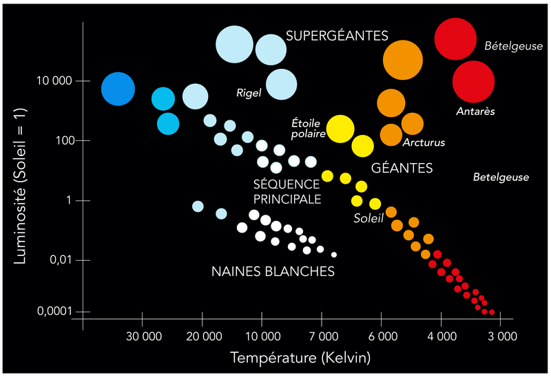
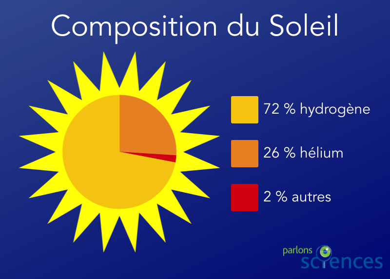
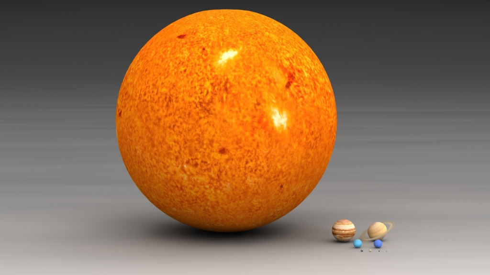
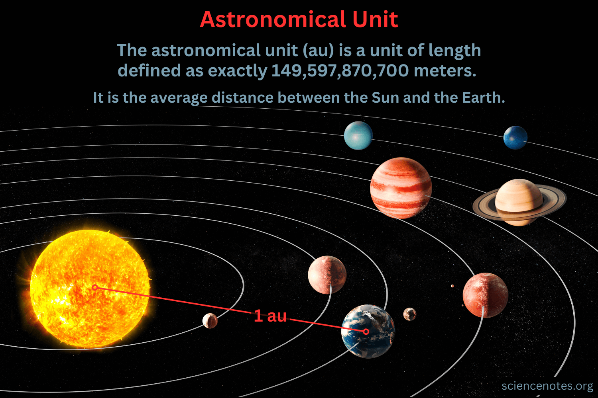
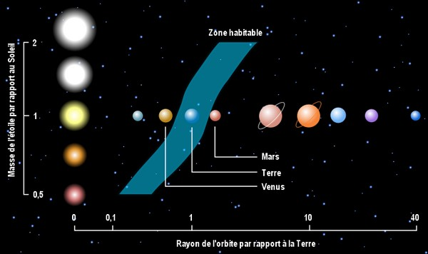
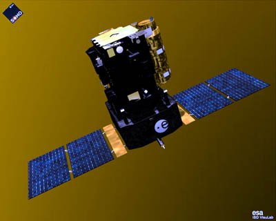
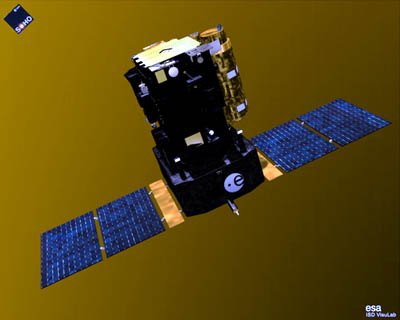

Le Soleil : Une étoile ordinaire aux caractéristiques fascinantes
Le Soleil, cette immense boule de feu que l'on observe chaque jour dans notre ciel, fait partie d'un groupe d'objets célestes que l'on appelle des étoiles. Bien que nous le percevions comme quelque chose d'unique, il est en réalité une étoile "ordinaire", c'est-à-dire qu'il appartient à la catégorie des étoiles de type spectral G2V (en attente d'un article sur la classification des étoiles notons simplement que, G2V signifie que le Soleil est une étoile jaune (catégorie 2), relativement chaude et de taille moyenne, avec une température de surface de 5 800 °C (Catégorie G de la séqeunce principale), située dans la phase stable de sa vie où il fusionne de l’hydrogène pour produire de l’énergie (V). Il est à la fois une étoile de type G et de luminosité de séquence principale.).
Cependant, sa proximité avec la Terre, combinée à sa taille impressionnante et à l'énergie qu'il produit, le rend absolument indispensable à notre planète. En effet, sans le Soleil, la vie sur Terre telle que nous la connaissons serait impossible. Il nous fournit chaleur, lumière et énergie, des éléments cruciaux pour les processus biologiques, climatiques et météorologiques. Pourtant, bien que nous dépendions totalement de lui, beaucoup d'entre nous ignorent encore comment fonctionne réellement cette étoile. Pourquoi est-il si chaud ? Comment produit-il sa lumière et pourquoi les scientifiques s'intéressent-ils autant à ce phénomène quotidien ?

Etoiles de la séquence principale, y compris le Soleil ©GStraub via Getty Images
Les bases : Qu'est-ce que le Soleil ?
Le Soleil est avant tout une sphère gigantesque composée principalement de gaz. Environ 75% de sa masse est constituée d'hydrogène, et environ 24% d'hélium. Le reste est constitué d’éléments plus lourds comme l’oxygène, le carbone et le fer, qui forment des traces dans son atmosphère. Avec un diamètre de 1,39 million de kilomètres, il est tellement grand que l'on pourrait y insérer près de 1,3 million de planètes comme la Terre. Sa masse, quant à elle, représente plus de 99% de la masse totale du Système Solaire. En d'autres termes, presque toute la matière qui compose notre Système Solaire est contenue dans le Soleil. Grâce à sa masse énorme, le Soleil exerce une force gravitationnelle qui maintient les planètes, astéroïdes et comètes en orbite autour de lui, régulant ainsi la dynamique de notre Système Solaire.

Les gaz qui composent le Soleil ©Parlons sciences

Le Soleil comparé aux planètes du système solaire ©I Love Universe
Le Soleil se trouve à une distance d'environ 150 millions de kilomètres de la Terre, ce qui est l'unité de mesure astronomique utilisée pour exprimer des distances dans l'espace : l'unité astronomique (UA). Cette distance, bien que paraissant énorme, est idéale pour que la Terre reçoive la quantité d'énergie nécessaire pour que la vie prospère. Ni trop près, ce qui causerait une chaleur insupportable, ni trop loin, ce qui entraînerait un froid glacial, cette distance est un facteur fondamental dans l'équilibre de notre climat et de nos saisons.

Représentation d'une unité astronomique ©Sciencenotes

Zone habitable en fonction du type d'étoile ©Techno-Sciences
Une chaleur intense : Comment fonctionne le Soleil ?
Le cœur du Soleil est un véritable four nucléaire. En son noyau, où les températures atteignent plus de 15 millions de degrés Celsius, se déroule un processus extrêmement puissant : la fusion nucléaire. Cette réaction consiste à fusionner des noyaux d'hydrogène pour en former de l'hélium, libérant ainsi d’énormes quantités d’énergie. Cette énergie prend la forme de lumière et de chaleur, qui se propagent dans toutes les directions.
Les différentes couches du Soleil
Le Soleil est constitué de plusieurs couches, chacune ayant une fonction spécifique dans le processus de production d’énergie. Comprendre ces couches nous permet de mieux appréhender son fonctionnement.
- Le noyau : C’est là que tout commence. À des températures et pressions extrêmement élevées, la fusion nucléaire transforme l’hydrogène en hélium, libérant une quantité phénoménale d'énergie. C’est cette énergie qui va être redistribuée dans tout le Soleil.
- La zone radiative : Après avoir été générée dans le noyau, l’énergie passe par la zone radiative, où elle est transportée sous forme de rayonnement. Dans cette zone, les photons (les particules de lumière) mettent des milliers d'années pour se déplacer d'une couche à l'autre, à cause de la densité élevée du Soleil. La diffusion des photons est un processus lent et chaotique, chaque photon rebondissant contre les particules dans la zone.
- La zone convective : En montant vers la surface, l’énergie entre dans la zone convective, où les mouvements de convection prennent le relais. Ici, des gaz chauds s’élèvent vers la surface, tandis que les gaz plus froids descendent, un peu comme l'eau qui chauffe dans une casserole. Ce processus de convection est essentiel pour transférer l'énergie de l'intérieur du Soleil vers sa surface.
- La photosphère : Il s'agit de la surface visible du Soleil, celle que nous voyons depuis la Terre. Bien qu’elle soit appelée "surface", il ne s’agit pas d’une surface solide mais d’une couche de gaz. La photosphère a une température d'environ 5 500°C, ce qui est relativement "froid" par rapport aux températures extrêmes du noyau. C'est ici que la lumière du Soleil émerge et commence son voyage vers la Terre.
- La chromosphère et la couronne : Au-delà de la photosphère, on trouve la chromosphère, une couche de gaz moins dense et plus chaude. La couronne, qui constitue l'atmosphère extérieure du Soleil, est étonnamment beaucoup plus chaude que la photosphère, atteignant des températures supérieures à 1 million de degrés Celsius. Ce phénomène reste un mystère pour les scientifiques, car on s’attendrait à ce que la température diminue en s'éloignant du Soleil, mais ce n’est pas le cas ici. La couronne est également le siège des éruptions solaires et des vents solaires, qui peuvent avoir des effets sur la Terre, notamment en perturbant nos systèmes de communication.
Les phénomènes solaires : Une activité en constante effervescence
Le Soleil, bien qu'il semble être une étoile stable et tranquille à l'œil nu, est en réalité un lieu de grande activité. À sa surface et dans son atmosphère, des phénomènes spectaculaires se produisent quotidiennement. Ces phénomènes sont alimentés par des processus physiques complexes, liés à son champ magnétique et à sa dynamique interne. Des événements comme les éruptions solaires, les taches solaires, et les tempêtes solaires révèlent la nature dynamique de cette étoile, et ont un impact direct sur notre planète et son environnement spatial. En effet, l'activité solaire influence non seulement les conditions météorologiques spatiales, mais aussi nos technologies modernes, parfois de manière surprenante.
Les taches solaires : Fenêtres sur l'activité du Soleil
Les taches solaires sont parmi les manifestations les plus visibles et étudiées du Soleil. Ce sont des zones sombres qui apparaissent sur la surface solaire, un peu comme des "imperfections" sur une boule de feu. En réalité, ces taches ne sont pas des trous ou des fissures, mais des régions où la température est plus basse que celle de la surface environnante du Soleil.
Pourquoi ces zones sont-elles plus froides ? Cela est dû à la présence de champs magnétiques puissants qui perturbent le mouvement des gaz chauds à la surface du Soleil, empêchant ainsi leur ascension normale vers la photosphère (la surface visible du Soleil). Cela crée des "brouillons" où la chaleur est piégée, ce qui rend la température de ces taches beaucoup plus basse — autour de 3 500 °C, contre 5 500 °C dans les zones voisines.
Les taches solaires suivent un cycle de 11 ans, qui fait partie d'un phénomène plus large appelé le cycle solaire. Ce cycle, durant lequel le Soleil passe de périodes de calme à des périodes d'activité intense, est marqué par l'augmentation et la diminution du nombre de taches solaires. Pendant les périodes de maximum solaire, le nombre de taches augmente, et cela coïncide souvent avec une activité accrue des autres phénomènes solaires.
Les éruptions solaires et les tempêtes solaires : Un danger pour la Terre ?
Les éruptions solaires sont des explosions gigantesques qui se produisent à la surface du Soleil. Ces événements libèrent une quantité d'énergie équivalente à des milliards de bombes atomiques. Cette énergie est sous forme de rayonnements électromagnétiques (comme des rayons X et des ultraviolets) ainsi que des particules chargées (protons, électrons). Ces particules sont éjectées dans l’espace à des vitesses proches de la lumière, formant ce que l'on appelle le vent solaire.
Lorsque ces particules atteignent la Terre, elles interagissent avec le champ magnétique de notre planète. Ce phénomène peut provoquer des aurores boréales dans les régions proches des pôles, mais aussi des perturbations bien plus graves. En effet, les tempêtes solaires peuvent endommager nos satellites, perturber les systèmes de communication et de navigation, et affecter les réseaux électriques. Ces événements, bien qu’impressionnants à observer, peuvent causer des dommages importants aux infrastructures technologiques modernes.
La puissance de ces éruptions solaires est telle qu'elles sont capables d'altérer la technologie que nous utilisons quotidiennement. Par exemple, des tempêtes solaires particulièrement fortes peuvent provoquer des pannes de satellites de communication, des coupures d’électricité à grande échelle, et des perturbations dans le GPS et les systèmes de navigation. Si une tempête solaire suffisamment puissante frappe la Terre, elle pourrait même causer des dommages à long terme à notre réseau électrique, en particulier les transformateurs électriques qui régulent la distribution d'énergie.
Cependant, ces phénomènes ne sont pas seulement un risque : ils sont aussi un domaine d'étude fascinant pour les scientifiques. Grâce aux instruments de surveillance sophistiqués comme le Solar and Heliospheric Observatory (SOHO), nous avons une bien meilleure compréhension des éruptions solaires et des tempêtes solaires. Ces satellites permettent de suivre l’activité solaire en temps réel et d’émettre des alertes si une éruption solaire particulièrement forte est détectée. Cela nous donne un peu de marge pour prendre des mesures préventives et minimiser les risques pour nos technologies.
Le Soleil : Source de vie et d'inspiration scientifique
Le Soleil est bien plus qu’une simple étoile brillante dans le ciel. C’est la source d’énergie primordiale qui permet à la Terre d’abriter la vie sous toutes ses formes. Grâce à l’énergie solaire, l’atmosphère terrestre reste suffisamment chaude et stable pour maintenir des conditions de vie favorables. Sans le Soleil, la Terre serait un monde gelé, inhospitalier et sans vie.
Le Soleil permet aussi à la vie végétale de se développer grâce à la photosynthèse. Ce processus naturel, où les plantes absorbent la lumière du Soleil pour produire de l’oxygène et des sucres, est au cœur de toute la chaîne alimentaire terrestre. Les plantes, les algues et certaines bactéries capturent l’énergie solaire et la convertissent en une forme utilisable, formant ainsi la base de l'ensemble des écosystèmes sur Terre.
Mais le Soleil est également un terrain d’étude fascinant pour les scientifiques, qui cherchent à comprendre non seulement le rôle du Soleil dans notre propre Système Solaire, mais aussi la manière dont il influence d’autres systèmes stellaires. L’astronomie solaire est une discipline cruciale qui nous aide à décoder les forces et phénomènes complexes qui régissent le Soleil, mais aussi l’ensemble du cosmos. En étudiant son comportement, ses cycles d’activité et ses éruptions, les chercheurs peuvent mieux comprendre les processus énergétiques qui gouvernent les étoiles et l’évolution des systèmes planétaires dans tout l'univers.
Explorer le Soleil : Les missions spatiales
Pour explorer ce phénomène fascinant de plus près, de nombreuses missions spatiales ont été lancées au cours des dernières décennies. Ces missions ont pour but d’approfondir notre compréhension du Soleil, d’observer ses comportements dans les détails, et d’analyser ses effets sur la Terre et l’espace environnant.
L’une des missions les plus ambitieuses et les plus récentes est la Parker Solar Probe, lancée en 2018 par la NASA. Cette sonde, qui s’approche plus près du Soleil que toute autre mission précédente, est la plus proche jamais envoyée vers l’étoile. L’objectif principal de la Parker Solar Probe est de mieux comprendre les phénomènes qui se produisent dans la couronne solaire, cette région chaude et dense de l’atmosphère solaire, mais aussi de déchiffrer les mystères du vent solaire, ce flux de particules énergétiques qui influence les conditions météorologiques spatiales. En se rapprochant à environ 6,2 millions de kilomètres du Soleil, la sonde recueille des données inestimables qui permettront de comprendre pourquoi la couronne est beaucoup plus chaude que la surface du Soleil.
 Parker Solar Probe ©NASA
Parallèlement à cette mission, la sonde SOHO (Solar and Heliospheric Observatory), une mission conjointe entre la NASA et l'ESA (Agence Spatiale Européenne), étudie le Soleil depuis 1995. SOHO a permis d'acquérir des informations cruciales sur la structure interne du Soleil, son champ magnétique, et ses cycles d’activité. Grâce à ses instruments, SOHO a observé les éruptions solaires, le vent solaire, et a cartographié la surface du Soleil avec une précision remarquable. SOHO a également contribué à la découverte de nombreuses comètes qui se sont dirigées vers le Soleil.

SOHO Probe ©ESA
Parker Solar Probe ©NASA
Parallèlement à cette mission, la sonde SOHO (Solar and Heliospheric Observatory), une mission conjointe entre la NASA et l'ESA (Agence Spatiale Européenne), étudie le Soleil depuis 1995. SOHO a permis d'acquérir des informations cruciales sur la structure interne du Soleil, son champ magnétique, et ses cycles d’activité. Grâce à ses instruments, SOHO a observé les éruptions solaires, le vent solaire, et a cartographié la surface du Soleil avec une précision remarquable. SOHO a également contribué à la découverte de nombreuses comètes qui se sont dirigées vers le Soleil.

SOHO Probe ©ESA
Ces missions, parmi d’autres, ont considérablement élargi notre compréhension du Soleil et de ses interactions avec l’environnement spatial. Les recherches menées grâce à ces explorations ne se contentent pas d’enrichir notre savoir scientifique, elles nous aident également à mieux anticiper et gérer les impacts des phénomènes solaires sur les technologies modernes, comme les satellites et les systèmes de communication. Elles ouvrent aussi la voie à une meilleure compréhension de l’évolution de notre propre Système Solaire et de la façon dont d’autres étoiles dans l’univers peuvent interagir avec leurs planètes.
En conclusion, le Soleil reste une source inépuisable de curiosité scientifique et un élément fondamental pour la vie sur Terre. L’étude continue de cette étoile est essentielle non seulement pour comprendre le passé et l’avenir de notre planète, mais aussi pour élargir nos connaissances sur l’ensemble de l'univers.